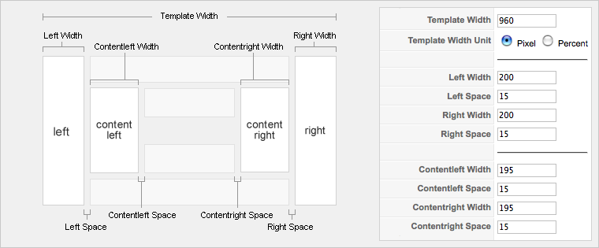

Change the layout column widths
This tutorial explains how you can set the template width and the width of the left, right, inner left and inner right column in your template based on the Warp Framework.
The following illustration shows the names of the module positions which belong to the columns and a screenshot from the template configuration where you can edit their widths.

When editing these values sometimes it is required that you have to edit background images which, in many YOOtheme templates, define the inner borders of your columns. Usually you only have to add the amount of pixels that you added to your column to your background image, too.
Additionally you can set the width of these columns for single menuitems. To do so go to Menus --> YOUR MENU and enter the following parameters as Page Class Suffix and change XXX to your width: contentleft_width-XXX contentright_width-XXX left_width-XXX right_width-XXX